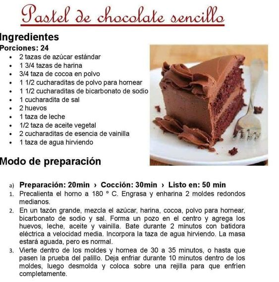

Nosotros
Los chocolates "Mi dulce Aitana" son creados a partir de recetas heredadas de nuestras abuelas, Empresa creada de manera familiar, comenzando en sus inicios comercializandose entre conocido y amigos. Son elaborados de manera artesanal , como la hacìa la abuela .
Baño de chocolate
El chocolate de cobertura se utiliza para cubrir y bañar tartas, bizcochos, cake pops, pasteles, galletas... Es un chocolate de alta calidad y con un alto porcentaje de manteca de cacao, la que lo hace más fluido y un chocolate especialmente indicado para repostería ¡un imprescindible en la cocina de cualquier amante de la repostería!
Receta del dìa
Nuestras Delicias
Ingredientes (para una fuente mediana)
400 gr de dulce de leche (si es repostero mucho mejor, sino no importa!)
400 gr de crema de leche o natilla
750 gr de galletitas de chocolate
Leche o café para remojar las galletitas
50 gr de chocolate (cobertura o de taza) semi amargo
50 gr de cacao en polvo
1 litro de leche sin tacc
5 cucharadas de Maizena
4 cucharadas de azúcar
150 gramos de chocolate o 4 cucharadas de chocolate en polvo
100gr de manteca
150gr de chocolate
2 huevos
1 taza de azúcar
1/2 taza de nueces picadas
100gr de harina